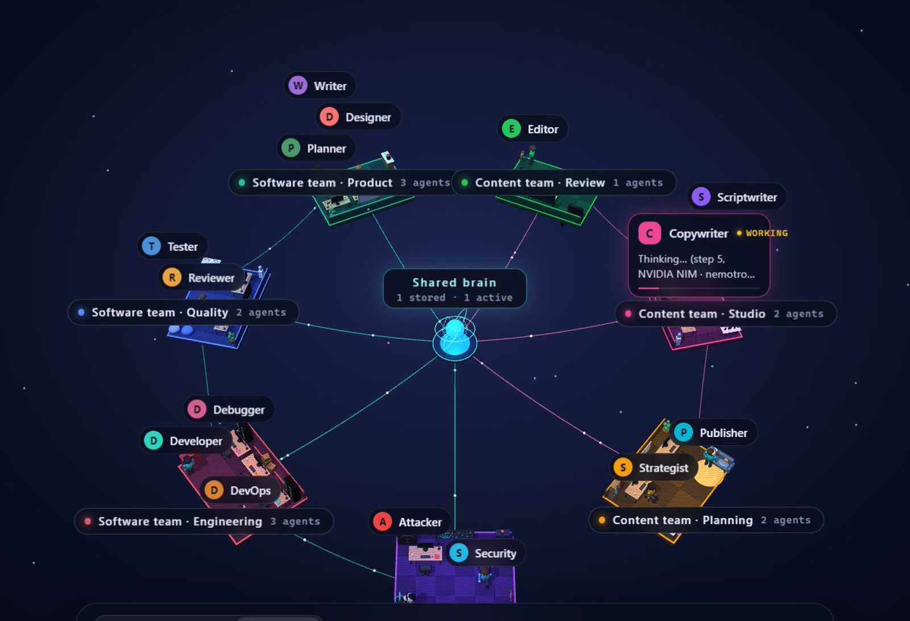
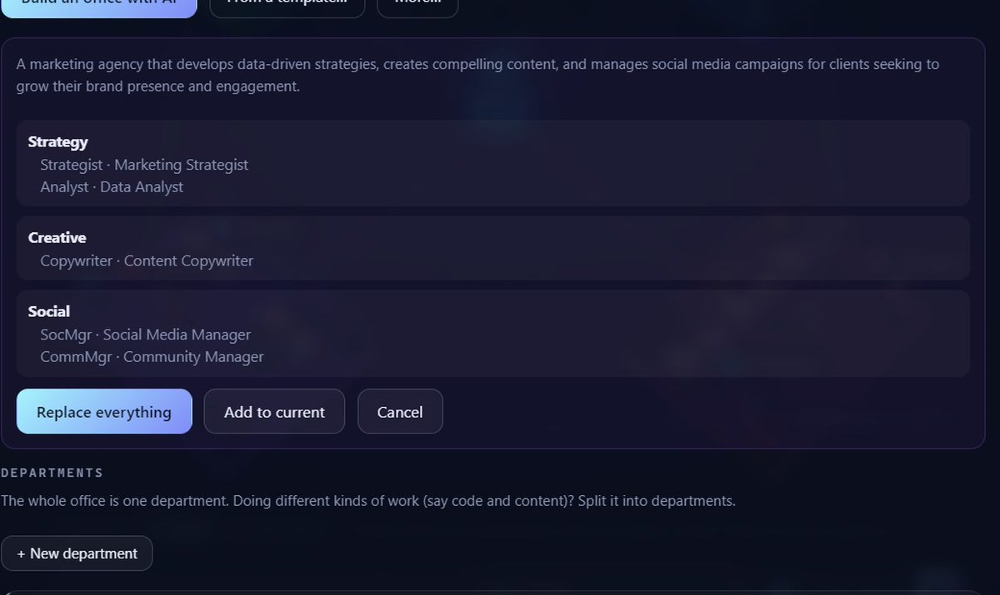
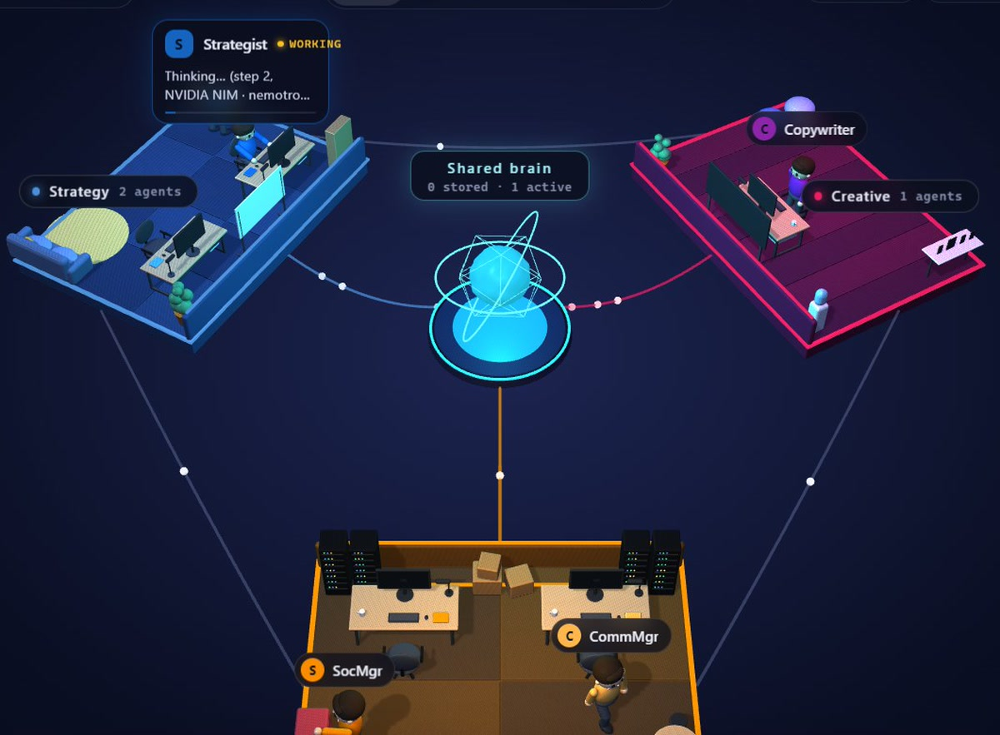
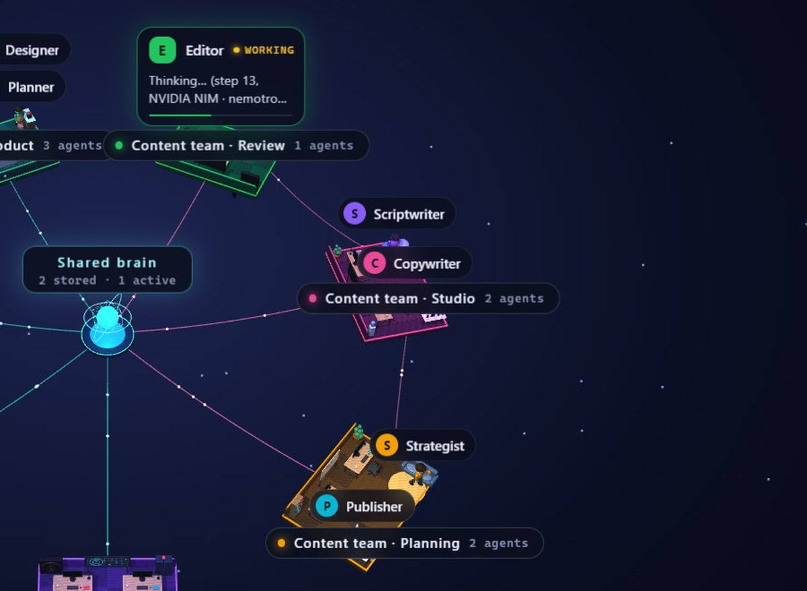
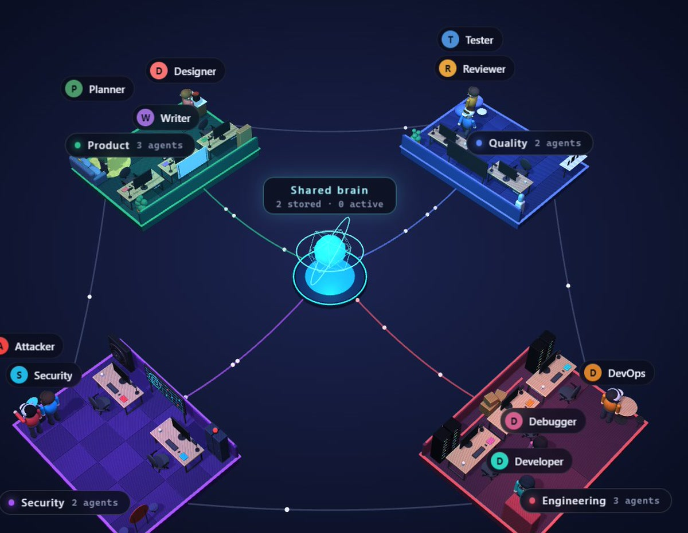
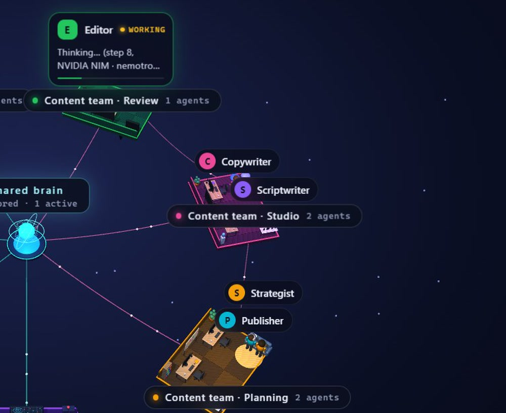

Shared brain
Project memory, a skills library with a skill store, and 33 one-click connectors such as Supabase, Vercel, Notion and Canva.
Free · Open source · Windows
Describe the team you need in one sentence. OrbitOffice builds a 3D office of AI agents that split the work, hand it off to each other and write real files into your folder.

44-second tour
Every shot in this video is OrbitOffice really running: the AI building a marketing agency, a content team handing a post from strategist to copywriter to editor, and Claude Code giving the office a task through MCP.
How it works
“A marketing agency with strategy, creative and social media.” The AI writes the teams and every agent: role, skills, which files they may touch, and how they work. Or start from a ready-made template and edit any agent as a plain .md file.

Each team gets its own island around a shared brain. Several departments can share one world, each with its own folder and its own lead, so coding and content never step on each other.

The lead splits the task, agents hand it to each other, ask you when something is missing, and write real files into your folder: plans, drafts, reviews, code. You see who is doing what, live.

Any kind of team


Works with your AI tools
Turn on the MCP server and Claude Code, Cursor or any MCP client can hand tasks to your OrbitOffice team, wait for the result and read the files they wrote. It only listens on your computer, needs a key, and anything that needs approval still asks you inside OrbitOffice.
Settings → Permissions → Copy Claude Code setup, then paste it in a terminal.
> Use OrbitOffice to get the Copywriter to write a short Instagram caption for Brew Haven's new Midnight Mocha coffee.
● orbitoffice · assign_task → Copywriter
● orbitoffice · wait_task
✓ done · Copywriter finished in 52s
● orbitoffice · read_file drafts/…midnight-mocha.md
Your Friday just got richer: Midnight Mocha launches#MidnightMocha #BrewHaven #CoffeeLovers
Everything else
Project memory, a skills library with a skill store, and 33 one-click connectors such as Supabase, Vercel, Notion and Canva.
Use free API keys from Gemini, NVIDIA NIM, Groq or OpenRouter, encrypted on your PC. Or run Qwen3.5, Gemma 4 or Granite locally with no key.
Manual, Auto or Full access. Agents only write inside your project folder, commands are opt-in, and publishing always asks first.
An attacker tests your project for vulnerabilities, only on targets you allow, and a security engineer fixes what it finds.
Yes. It is free and open source under the MIT license. You only pay an AI provider if you choose a paid plan; free API tiers and the built-in local AI cost nothing.
Google Gemini, NVIDIA NIM, Groq, OpenRouter, a local Ollama or any OpenAI-compatible endpoint. The built-in local AI runs Qwen3.5, Gemma 4 and Granite models on your own machine, each tested to call tools correctly.
Your files stay on your computer. When you use a cloud AI, what the agents read and write is sent to that AI provider; with the built-in local AI nothing leaves your computer. API keys are stored encrypted on your PC and only sent to their own provider. OrbitOffice has no telemetry.
OrbitOffice is not code-signed yet, so SmartScreen may show a warning. Click “More info”, then “Run anyway”.